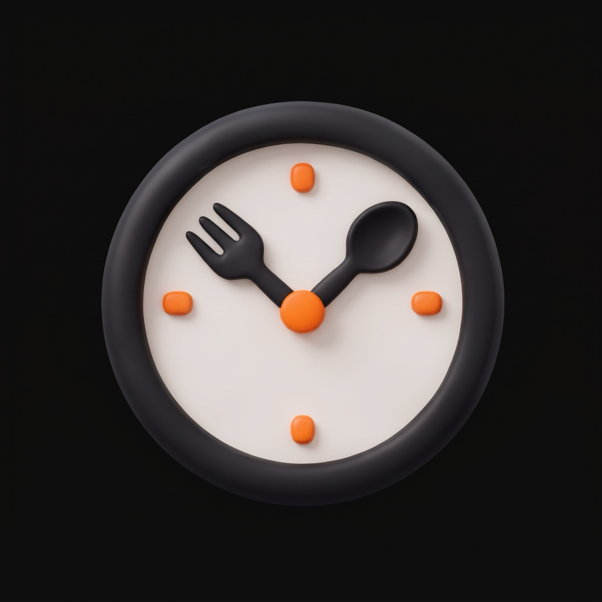
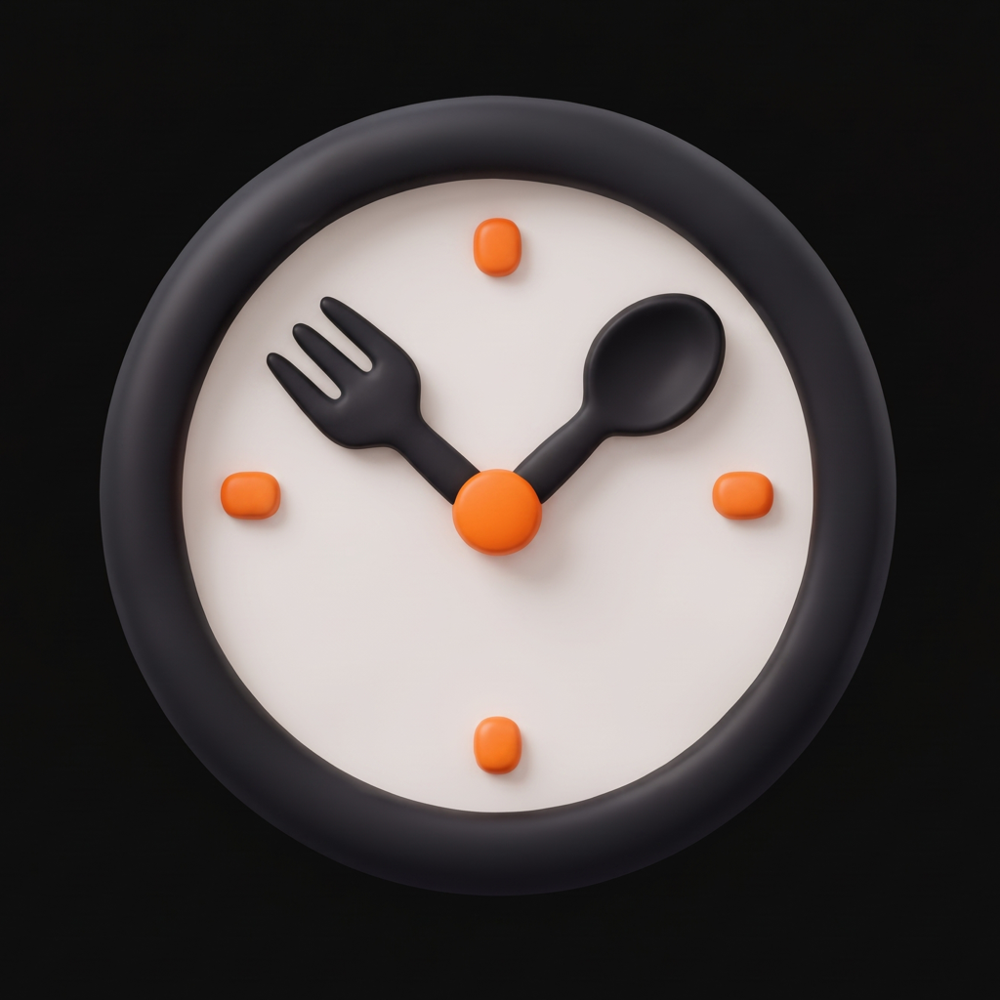
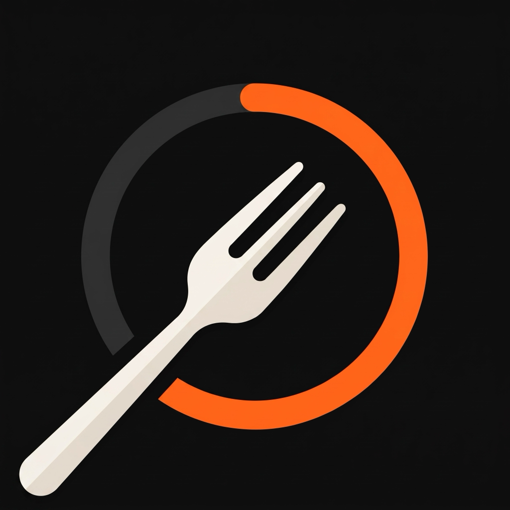
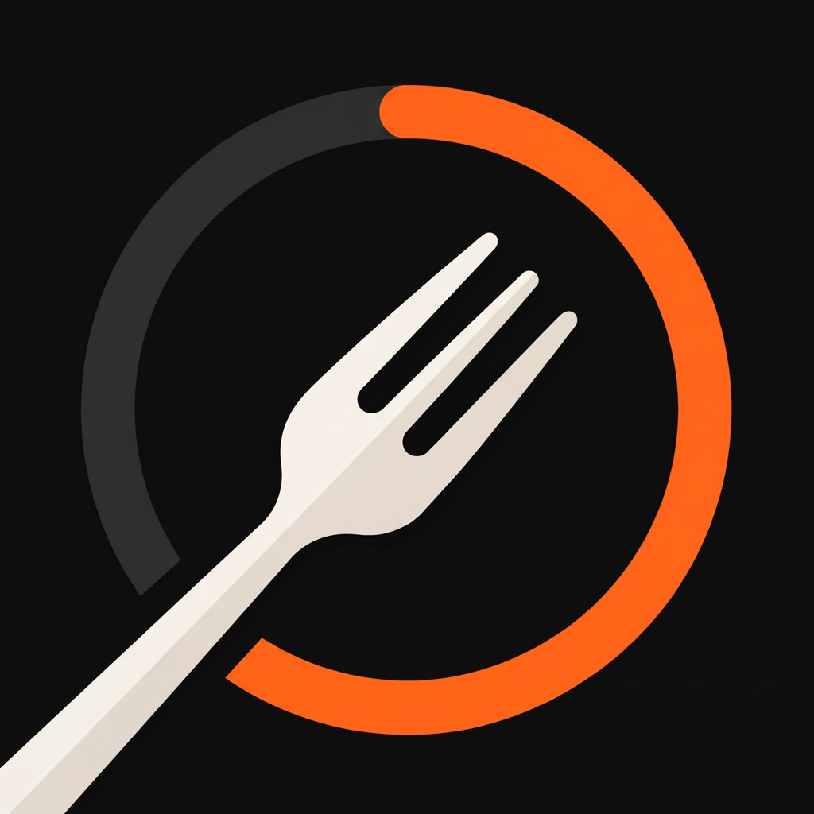

<title>Diyet İkon Favorileri</title>
<meta name="claude:viewport-fit-sides" content="cover">
<style>
:root{--bg:#f2f2f4;--card:#fff;--fg:#111113;--mut:#6b6b72;--line:rgba(0,0,0,.08);--now:#ff6a1a;--wpL:linear-gradient(160deg,#dfe6f2,#f6e9dc);--wpD:linear-gradient(160deg,#1b2233,#2a1d17)}
@media (prefers-color-scheme:dark){:root:not([data-theme="light"]){--bg:#0a0a0b;--card:#161618;--fg:#f2f2f4;--mut:#8e8e95;--line:rgba(255,255,255,.08);--now:#ff7a2f;color-scheme:dark}}
:root[data-theme="dark"]{--bg:#0a0a0b;--card:#161618;--fg:#f2f2f4;--mut:#8e8e95;--line:rgba(255,255,255,.08);--now:#ff7a2f;color-scheme:dark}
body{background:var(--bg);color:var(--fg);font:15px/1.5 -apple-system,BlinkMacSystemFont,"SF Pro Text",system-ui,sans-serif;padding-left:max(16px,env(safe-area-inset-left,0px));padding-right:max(16px,env(safe-area-inset-right,0px));padding-block:32px 64px}
main{max-width:920px;margin:0 auto}
h1{font-size:34px;line-height:1.1;letter-spacing:-.02em;margin:0 0 8px;text-wrap:balance}
.lead{color:var(--mut);margin:0 0 32px;max-width:62ch}
.card{background:var(--card);border-radius:24px;padding:24px;margin-bottom:16px;box-shadow:0 1px 2px rgba(0,0,0,.04),0 8px 24px rgba(0,0,0,.05);border:1px solid var(--line)}
.card h2{font-size:22px;margin:0 0 4px}
.card p{color:var(--mut);margin:0 0 20px;max-width:62ch}
.row{display:grid;grid-template-columns:repeat(auto-fit,minmax(240px,1fr));gap:16px}
.cell{min-width:0}
.cap{font-size:11px;text-transform:uppercase;letter-spacing:.08em;color:var(--mut);margin-bottom:8px}
.big{display:flex;gap:12px;align-items:flex-end}
.big img{width:min(140px,40vw);aspect-ratio:1;border-radius:22.4%;display:block}
.big img.g{width:min(96px,28vw)}
.wp{border-radius:16px;padding:16px;display:flex;gap:20px;align-items:flex-end;flex-wrap:wrap}
.wp.l{background:var(--wpL)}.wp.d{background:var(--wpD)}
.ic{display:flex;flex-direction:column;align-items:center;gap:4px;font-size:11px}
.wp.l .ic{color:#1c1c1e}.wp.d .ic{color:#f2f2f4}
.ic img{border-radius:22.4%;display:block;box-shadow:0 2px 6px rgba(0,0,0,.18)}
.s60 img{width:60px;height:60px}.s40 img{width:40px;height:40px}.s29 img{width:29px;height:29px}
.note{font-size:13px;color:var(--mut);margin-top:16px}
.note b{color:var(--fg);font-weight:600}
</style>
<main>
<h1>Son sürüm: saat ve çatal</h1>
<p class="lead">İki favorini Gemini'ye referans olarak verdim. Tasarım aynı kaldı, yalnızca tuval değişti: 2048 px, köşesiz, kenardan kenara siyah (köşeyi iOS kendisi keser). Her ikonda iki çerçeve var. Gemini oranı ilk favorindeki orana denk; ızgara oranında ana şekil tuvalin yaklaşık %80'ini kaplıyor ve ana ekranda daha dolu duruyor.</p>
<section class="card"><h2>Saat</h2><p>Kil dokulu yumuşak 3D: siyah kasa, kırık beyaz kadran, turuncu işaretler, çatal akrep, kaşık yelkovan.</p><div class="cap" style="margin-top:20px">Gemini oranı, yaklaşık %67</div><div class="big"></div><div class="row" style="margin-top:12px"><div class="cell wp l"><div class="ic s60"><span>Diyet</span></div><div class="ic s40"></div><div class="ic s29"></div></div><div class="cell wp d"><div class="ic s60"><span>Diyet</span></div><div class="ic s40"></div><div class="ic s29"></div></div></div><div class="cap" style="margin-top:20px">Izgara oranı, yaklaşık %80</div><div class="big"></div><div class="row" style="margin-top:12px"><div class="cell wp l"><div class="ic s60"><span>Diyet</span></div><div class="ic s40"></div><div class="ic s29"></div></div><div class="cell wp d"><div class="ic s60"><span>Diyet</span></div><div class="ic s40"></div><div class="ic s29"></div></div></div><div class="note"><b>Not:</b> 29 pt'de çatal ve kaşık seçilmiyor ama kadran ve turuncu nokta saat olarak okunuyor.</div></section>
<section class="card"><h2>Çatal ve halka</h2><p>Düz grafik: koyu iz üstünde turuncu ilerleme yayı, çapraz kırık beyaz çatal. Sap, ilk favorindeki gibi sol alt köşeden taşıyor.</p><div class="cap" style="margin-top:20px">Gemini oranı, yaklaşık %67</div><div class="big"></div><div class="row" style="margin-top:12px"><div class="cell wp l"><div class="ic s60"><span>Diyet</span></div><div class="ic s40"></div><div class="ic s29"></div></div><div class="cell wp d"><div class="ic s60"><span>Diyet</span></div><div class="ic s40"></div><div class="ic s29"></div></div></div><div class="cap" style="margin-top:20px">Izgara oranı, yaklaşık %80</div><div class="big"></div><div class="row" style="margin-top:12px"><div class="cell wp l"><div class="ic s60"><span>Diyet</span></div><div class="ic s40"></div><div class="ic s29"></div></div><div class="cell wp d"><div class="ic s60"><span>Diyet</span></div><div class="ic s40"></div><div class="ic s29"></div></div></div><div class="note"><b>Not:</b> küçük boyutta en net okunan bu. Izgara oranında sapın ucu köşede iOS maskesiyle kesiliyor; ilk favorinde de böyleydi.</div></section>
</main>
